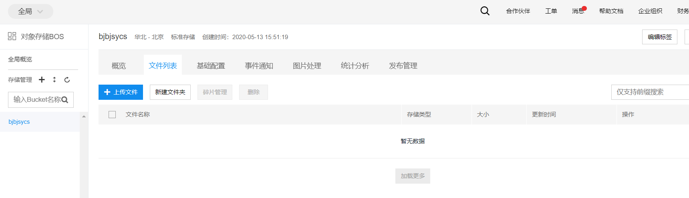

百度云对象存储BOS注册与基本使用向导
概述
该用户手册旨在帮助用户完成注册百度云对象存储BOS购买服务，使用客户端登录BOS上传下载数据。
前提条件
注册一个百度账号，供后续使用。登录注册网址
主要步骤
1、登录开通BOS
打开BOS主页用百度账号登录，登录成功界面如下图所示：

点击对象存储BOS，界面如下图所示：

点击立即开通按钮弹出界面如下：

在财务的位置点击充值按钮进行充值，弹出界面如下图所示：

充值是一种按使用标准存储空间的容量进行付费的模式，相对开发者套件云服务来说比较划算，余额还可以随时提取。
2、创建bucket
在上上图中点击新建bucket，弹出界面如下图所示：

注意在所属地域的地方选择自己的区域，读写权限设置为私有，cdn计费方式选择按使用流量计费，这是一种后付费模式，使用多少流量，付多少费，比较划算。创建成功后界面如下图所示：

权限设置修改如下图所示：

创建成功后AK、SK查看方法：

点击红框中的Access Key，弹出界面如下所示：

点击Secret Key显示按钮输入验证码即可查看SK。
3、使用BOS客户端
从BOS桌面客户端上，下载桌面客户端软件，有Windows和Mac两种，下面以Windows为例来下载，安装成功后打开界面如下图所示：

填写上自己的AK、SK后，点击向右的箭头，如下图所示：

设置输入自己的安全码点击登录即可看到自己创建的bucket如下图所示：

然后上传下载单个文件或者整个文件夹数据即可。